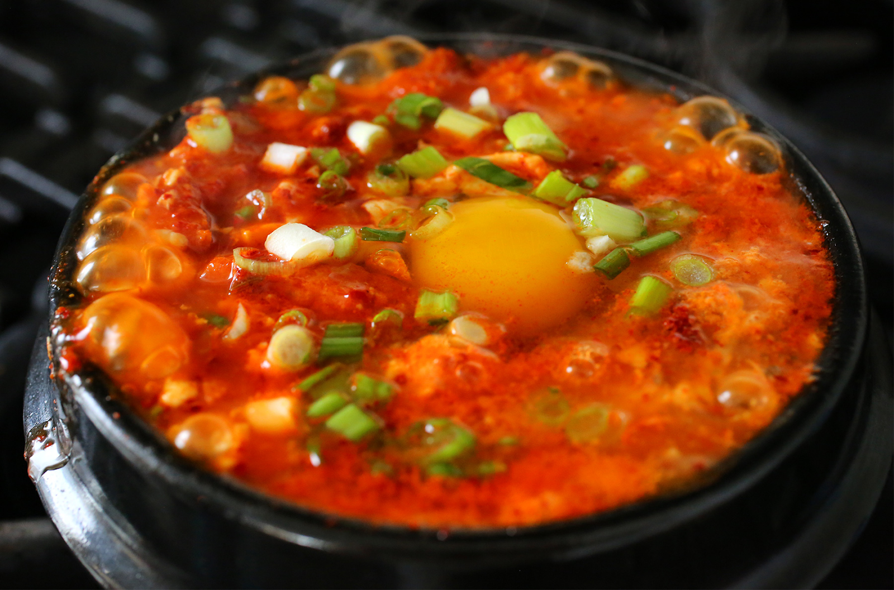
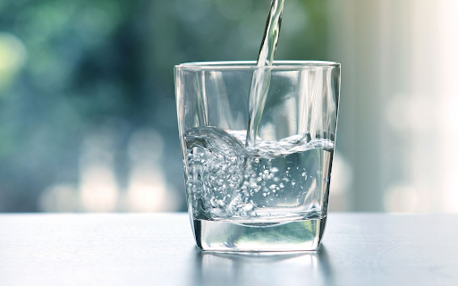
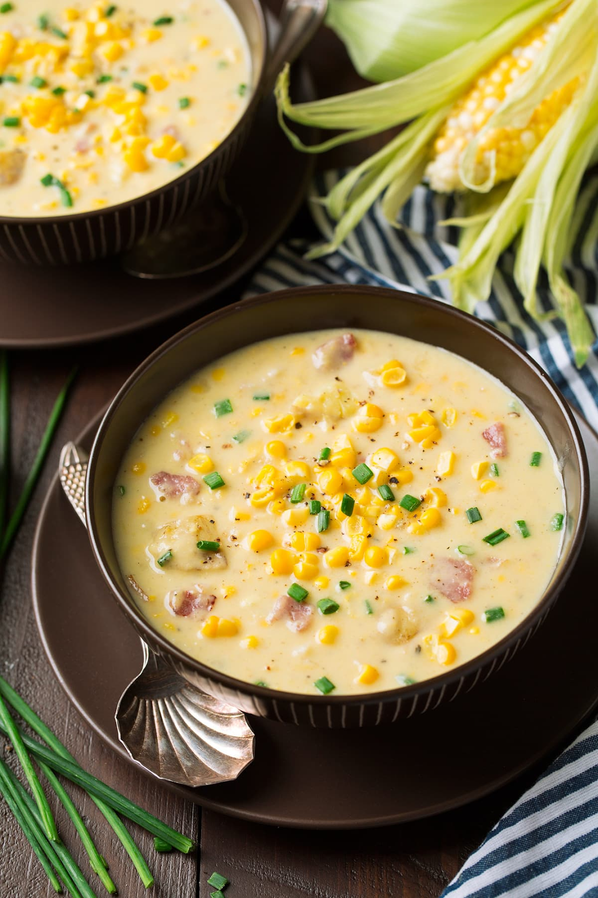

CS 184: Computer Graphics and Imaging, Spring 2021
Final Project: SoupSim
Thomas Glezen, Amy Liu, Joshua Yang, Katelyn Biesiadecki
Summary
SoupSim simulates the physical properties of soup, including viscosity, textures, and clumps of various ingredients within the soup.
With SoupSim, users can tinker with various soupy parameters to construct their ideal soup and interact with it however they like within a virtual environment.
SoupSim represents a small but important step toward the metaverse that we are building as virtual dreamers of the future.
Problem Description
In many video games and animations, soup is generally just a colored liquid.
Oftentimes, gamers and audiences may find this unappetizing and a sneaky but potent reminder that virtual worlds are indeed not real.
Even when soup is carefully crafted by animators, they have to painstakingly animate individual clumps in the soup and keyframe various aspects of the soup that could make the process very tedious.
Thus, with SoupSim, we hope to build a fluid simulator with customizable viscosity and the option of extra components within the fluids to amplify the quality, realism, and accessibility of top quality soup in virtual worlds within video games, animated films, commercials, and more.
SoupSim can also be generalized to other liquids (with clumps) such as blood, mud, and other liquids.

Goals and Deliverables
- Important things that we are trying to accomplish
- Bowl rendering
- Low viscosity, e.g. water:

- Medium viscosity + solid ingredients + color variation, e.g. corn chowder

- Images that we will include
- Define how you will measure the quality / performance of your system
- We don’t yet have a clear metric, but our plan is to do visual comparisons with real world liquids to assess the accuracy of our simulator.
- What questions do we plan to answer with our anaysis
- Render Time
- Accuracy of particle interactions when compared to real life fluids
- idk Thomas bro help
Schedule
- Week 1: Setup/research and interface
- Research existing fluid simulation platforms and libraries
- Import as much existing project code into interface
- Week 2: Bowl and liquid interactions
- Simulate bowl
- Simulate low viscosity liquid
- Liquids splashing against the sides of bowl
- Week 3/4: Viscosity
- Create interface that allows for adjusting viscosities
- Possibly incorporate clumping for higher viscosities
Resources
- We hope to use project 4 as our starter code, as cloth simulation will be similar to the particle simulations we want to do for fluids
- https://cs184.eecs.berkeley.edu/sp21/docs/proj4
- We also want to utilize this paper to adopt thermal conduction simulation as well as viscosity simulation
- If we try some of our stretch goals, one such goal would be to put objects in the soup, such as potato, beans, or corn. We were thinking of using this paper to help us with that